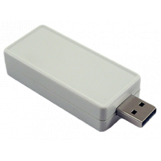

Project template containing the recommended board layout for Hammond Manufacturing 1551USB1:
Translucent - Smoke: 1551USB1TSK - HM1467-ND
Translucent - Red: 1551USB1TRD - HM1468-ND
Gray: 1551USB1GY - HM1460-ND
Translucent - Clear: 1551USB1CLR - HM1459-ND
Black: 1551USB1BK - HM1458-ND
|  |
The "Dwgs.User" layer contains all critical dimmensions in milimeters[inches].
The "Edge.Cuts" layer contains the maximum board outline and holes to align with board standoffs.
PCB Preview: